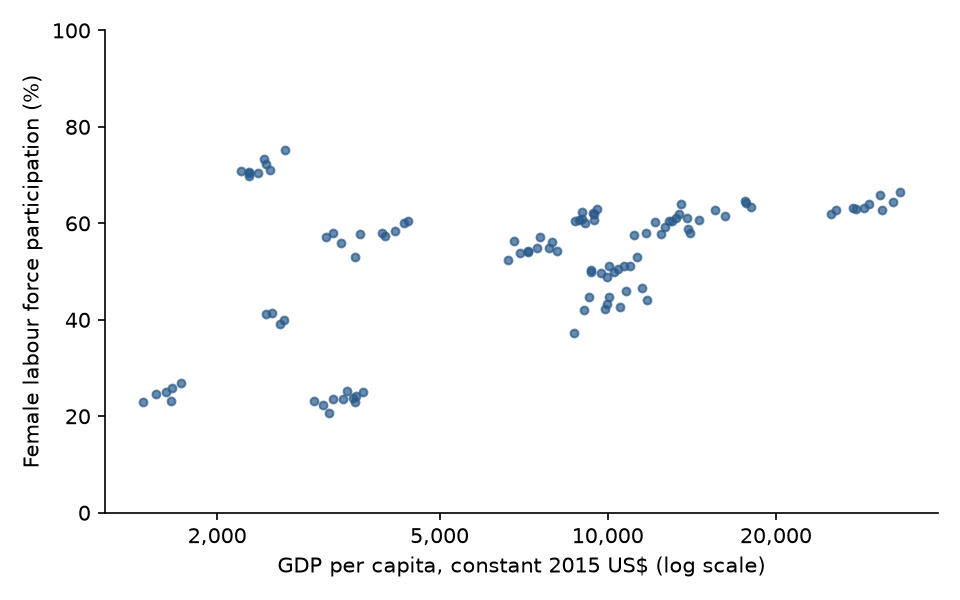

import pandas as pd
raw = pd.read_csv("data/wdi_extract.csv")ParserError: Error tokenizing data. C error: Expected 3 fields in line 5, saw 15
ECON 3916 • Applied Machine Learning for Economists • Midterm Project
Cleaning and joining the data you found,
and what each section is graded on.
Dr. Richeng Piao
Department of Economics
Northeastern University
Four lines about your data
1 Where it comes from
2 Its shape
3 What is missing
4 The one join or reshape
Mon 9 Nov, 11:59 pm
Midterm project due. Colab link (Anyone with the link), report PDF of ten pages at most, GitHub repository.
Wed 4 Nov, 11:59 pm
Lab 14 due — the diagnostics lab. Section 4 of the midterm is the same tests on your own data.
Sun 8 Nov
Quiz 1 closes — the same weekend as the midterm. Plan for both.
Fri 13 Nov
Problem Set 4 due, after the midterm.
Dates are on Canvas too. If this slide and Canvas ever disagree, Canvas is the one that counts.
Before you commit to a dataset you write four lines about it. They are the part of the midterm nobody can do for you two days before it is due, and they are most of Section 1.
1
Where it comes from
the URL, and the date you downloaded it
2
Its shape
rows, columns, and what one row is
3
What is missing
which columns, how many, and whether it looks random
4
The one join or reshape
merging two files, wide to long, aggregating — or none
Each line gets one worked example on the same small file. Then the six rubric rows, then eight minutes on your own data.
For your own midterm data: how far down the four lines can you write today?
Pick the furthest line you could write now, without opening anything.
Mostly A
The working time at the end is for downloading. Nothing else in the midterm can start before the file exists.
Mostly B or C
Lines 3 and 4 are yours today: the missing-data count and the merge check.
Mostly D
Use each section to check what you already did, and spend the rubric section on Sections 3 and 4.
The URL and the date you downloaded it • 7 min
The same URL gives you a different file next year. Statistical agencies revise: GDP is re-estimated, the World Bank updates its indicators more than once a year, and FRED keeps old versions of a series in ALFRED because the numbers change.
Your number belongs to one download. The URL says where; the date says which version.
Rubric, repository row: “A stranger who clones it should be able to get to your number without emailing you.” Line 1 is the start of that.
import pandas as pd
raw = pd.read_csv("data/wdi_extract.csv")ParserError: Error tokenizing data. C error: Expected 3 fields in line 5, saw 15
raw = pd.read_csv("data/wdi_extract.csv", skiprows=4)
print(raw.shape)(36, 15)
with open("data/wdi_extract.csv") as f:
for _ in range(5):
print(f.readline().rstrip()[:60])"Data Source","World Development Indicators", "Last Updated Date","2025-07-01", "Country Name","Country Code","Indicator Name","Indicator Co
The four lines the parser choked on are the file’s own provenance: the source and its Last Updated Date. Copy them into line 1, then skip them.
Synthetic data in the WDI download layout: real country names and codes, generated numbers. Code and output: cells/midterm.py
SOURCE = "https://databank.worldbank.org/source/world-development-indicators"
DOWNLOADED = "2025-08-15" # the day you clicked Download
with open("data/wdi_extract.csv") as f:
LAST_UPDATED = [next(f) for _ in range(3)][2].split(",")[1].strip('"')
print("source:", SOURCE)
print("last updated:", LAST_UPDATED, "| downloaded:", DOWNLOADED)source: https://databank.worldbank.org/source/world-development-indicators last updated: 2025-07-01 | downloaded: 2025-08-15
Line 1, as you would post it
World Bank, World Development Indicators, databank.worldbank.org/source/world-development-indicators, downloaded 2025-08-15 (the file says last updated 2025-07-01).
Downloaded by code instead (FRED, an API)? Then the series id and the day you ran it are line 1, and the repository documents the download step.
Synthetic data in the WDI download layout: real country names and codes, generated numbers. Code and output: cells/midterm.py
Rows, columns, and what one row is • 8 min
print(raw.shape) print(raw.columns[[0, 1, 2, 3, 4, -2, -1]].tolist()) print(raw[["Country Code", "Indicator Code", "2010"]].head(4))
(36, 15) ['Country Name', 'Country Code', 'Indicator Name', 'Indicator Code', '2010', '2019', 'Unnamed: 14'] Country Code Indicator Code 2010 0 BRA SL.TLF.CACT.FE.NE.ZS 60.564 1 BRA NY.GDP.PCAP.KD 8733.700 2 BRA SP.DYN.TFRT.IN 1.851 3 CHL SL.TLF.CACT.FE.NE.ZS 59.289
print(raw["Country Code"].nunique(), "countries x",
raw["Indicator Code"].nunique(), "indicators =", len(raw), "rows")12 countries x 3 indicators = 36 rows
One row here is a country × an indicator, with years across. Your regression needs one row per country-year, so line 2 already tells you what line 4 will be.
Synthetic data in the WDI download layout: real country names and codes, generated numbers. Code and output: cells/midterm.py
raw = raw.dropna(axis=1, how="all") # the empty "Unnamed: 14"
ids = ["Country Name", "Country Code",
"Indicator Name", "Indicator Code"]
long = raw.melt(id_vars=ids, var_name="year", value_name="value")
print(long.shape)
print(long["year"].dtype)(360, 6) object
as downloaded
36 × 15
country × indicator
after melt
360 × 6
country × indicator × year
After melt every number has its own row, labelled by country, indicator and year. One more step makes it a panel.
Synthetic data in the WDI download layout: real country names and codes, generated numbers. Code and output: cells/midterm.py
short = {"SL.TLF.CACT.FE.NE.ZS": "flfp",
"NY.GDP.PCAP.KD": "gdp_pc",
"SP.DYN.TFRT.IN": "fertility"}
long["var"] = long["Indicator Code"].map(short)
long = long.rename(columns={"Country Name": "country",
"Country Code": "code"})
panel = (long.pivot(index=["country", "code", "year"],
columns="var", values="value")
.reset_index().rename_axis(columns=None))
panel["year"] = panel["year"].astype(int)
print(panel.shape)
print(panel.head(3).round(1).to_string(index=False))(120, 6) country code year fertility flfp gdp_pc Brazil BRA 2010 1.9 60.6 8733.7 Brazil BRA 2011 1.7 60.6 8894.7 Brazil BRA 2012 1.7 60.9 9010.1
after pivot
120 × 6
country × year
Skip astype(int) and the merge in line 4 stops:
ValueError: You are trying to merge on object and int64 columns for key 'year'. If you…
Synthetic data in the WDI download layout: real country names and codes, generated numbers. Code and output: cells/midterm.py
print(panel.duplicated(["code", "year"]).sum()) print(long.duplicated(["code", "year"]).sum())
0 240
A check you have never seen fail proves nothing. Run it once where it must fail, and then the zero is evidence.
Line 2, as you would post it
Downloaded as 36 rows × 15 columns, one row per country-indicator. After the reshape, 120 rows, one per country-year: 12 countries, 2010–2019.
Synthetic data in the WDI download layout: real country names and codes, generated numbers. Code and output: cells/midterm.py
Which columns, how many, and whether it looks random • 8 min
print(panel.isna().sum())
country 0 code 0 year 0 fertility 3 flfp 7 gdp_pc 3 dtype: int64
vars3 = ["flfp", "gdp_pc", "fertility"]
gaps = panel.set_index(["code", "year"])[vars3].isna()
by_country = gaps.groupby("code").sum()
print(by_country[by_country.sum(axis=1) > 0])
g = gaps.reset_index()
for v in vars3:
rows = g[g[v]]
print(v, sorted(set(rows["code"])), rows["year"].tolist())flfp gdp_pc fertility code BRA 0 0 1 IND 4 0 0 NGA 3 3 0 POL 0 0 1 VNM 0 0 1 flfp ['IND', 'NGA'] [2010, 2011, 2012, 2013, 2010, 2011, 2012] gdp_pc ['NGA'] [2017, 2018, 2019] fertility ['BRA', 'POL', 'VNM'] [2014, 2011, 2018]
The count says how much. Grouping the gaps by unit and by year says whether they look random.
Synthetic data in the WDI download layout: real country names and codes, generated numbers. Code and output: cells/midterm.py
flfp_gap = panel.groupby("code")["flfp"].apply(lambda s: s.isna().any())
has_gap = panel["code"].map(flfp_gap).rename("has a flfp gap")
print(panel.groupby(has_gap)["gdp_pc"].median().round(0))has a flfp gap False 9323.0 True 1663.0 Name: gdp_pc, dtype: float64
MCAR
Fertility. 3 single years in three countries, no pattern by country or year. Defensible, and you say why.
MAR
Female LFP. The series starts late in two poorer countries. The gaps depend on what you can see: income and year.
MNAR?
GDP stops after 2016 in one country. The file does not say why; the source’s notes do. If the bad years are the missing ones, that is MNAR.
Synthetic data in the WDI download layout: real country names and codes, generated numbers. Code and output: cells/midterm.py
kept = panel.dropna()
print(len(panel), "->", len(kept))
print((panel.groupby("code").size() - kept.groupby("code").size())
.loc[lambda s: s > 0])120 -> 107 code BRA 1 IND 4 NGA 6 POL 1 VNM 1 dtype: int64
Line 3, as you would post it
Missing: female LFP 7 (India 2010–13, Nigeria 2010–12), GDP 3 (Nigeria 2017–19), fertility 3 single years. The gaps sit in the poorer countries, so not random; dropping them keeps 107 of 120 rows and leaves the sample richer than the twelve countries are.
Synthetic data in the WDI download layout: real country names and codes, generated numbers. Code and output: cells/midterm.py
Merging two files, wide to long, aggregating — or none • 8 min
A second file from a different source: weeks of paid maternity leave, by country name and year.
leave = pd.read_csv("data/leave_weeks.csv")
m = panel.merge(leave, on=["country", "year"])
print(len(panel), len(leave), len(m))120 120 80
The default merge is an inner join: it keeps only rows whose keys match exactly, and it does not tell you what it dropped.
Synthetic data in the WDI download layout: real country names and codes, generated numbers. Code and output: cells/midterm.py
m = panel.merge(leave, on=["country", "year"], how="outer", indicator=True) print(m["_merge"].value_counts()) print(sorted(m.loc[m["_merge"] == "left_only", "country"].unique())) print(sorted(m.loc[m["_merge"] == "right_only", "country"].unique()))
_merge both 80 left_only 40 right_only 40 Name: count, dtype: int64 ['Egypt, Arab Rep.', 'Korea, Rep.', 'Turkiye', 'Viet Nam'] ['Egypt', 'South Korea', 'Turkey', 'Vietnam']
Names change between sources; codes mostly do not. When both files carry a code (ISO3 for countries, FIPS for US counties), merge on the code.
Synthetic data in the WDI download layout: real country names and codes, generated numbers. Code and output: cells/midterm.py
fix = {"Egypt": "Egypt, Arab Rep.", "South Korea": "Korea, Rep.",
"Turkey": "Turkiye", "Vietnam": "Viet Nam"}
leave["country"] = leave["country"].replace(fix)
merged = panel.merge(leave, on=["country", "year"], how="outer",
indicator=True, validate="one_to_one")
print(merged["_merge"].value_counts())
merged = merged.drop(columns="_merge")
print(merged.shape)_merge both 120 left_only 0 right_only 0 Name: count, dtype: int64 (120, 7)
Line 4, as you would post it
Reshaped WDI wide to long, then merged a leave table on country and year. Four names did not match; fixed with a crosswalk. 120 rows before, 120 after, 0 unmatched.
Synthetic data in the WDI download layout: real country names and codes, generated numbers. Code and output: cells/midterm.py
Six rows, 100 points, on the same example • 15 min
| Row | Pts | What earns full marks |
|---|---|---|
| Question and data provenance | 20 | A measurable question; data described as a measurement product; missingness mechanism named and defended; a summary table that reads on its own |
| Descriptive evidence | 20 | Two or more figures, each making a stated point; captions state findings, not variables; Topic 3’s standards |
| Model and interpretation | 25 | A formatted regression table; two coefficients interpreted in full, with units and magnitude; every control justified by its role |
| Diagnostics | 20 | Residuals, heteroskedasticity, VIF and influence, all run and interpreted; robust errors where warranted |
| Threats and conclusion | 10 | The causal claim assessed; the estimand labelled if it is not causal; no new results in the conclusion |
| Repository | 5 | Public repo with notebook and report; data included or the download documented; a README you wrote |
No AI anywhere in this project — code, analysis, writing, README. Section 4 uses Topic 14; write Sections 1–3 first.
| Variable (unit) | Mean | SD | Min | Max |
|---|---|---|---|---|
| Female LFP (% of women 15+) | 52.3 | 14.3 | 20.6 | 75.2 |
| GDP per capita (2015 US$) | 9,639.2 | 7,648.7 | 1,474.8 | 33,302.6 |
| Fertility (births per woman) | 2.1 | 0.9 | 1.0 | 5.6 |
| Paid leave (weeks) | 18.3 | 4.5 | 12.0 | 30.0 |
n = 107 country-years, 12 countries, 2010–2019, after dropping rows with a gap.
Units in the row names and the sample under the table: nobody has to ask what 52.3 is a percentage of.

× “Female LFP and GDP per capita.”
✓ “Female participation rises with income: the poorest third of countries averages 40.1%, the richest third 59.0%.”
Synthetic data in the WDI download layout: real country names and codes, generated numbers. Code and output: cells/midterm.py
| Female LFP (pp) | |
|---|---|
| log GDP per capita | 9.05 (2.06) |
| Fertility (births) | -3.96 (2.60) |
| Paid leave (weeks) | 1.49 (0.24) |
| Constant | -46.82 (24.86) |
| N | 107 |
| R² | 0.487 |
OLS; robust (HC1) standard errors in parentheses.
“Holding fertility and leave fixed, a country-year with 10% higher GDP per capita has female participation 0.86 percentage points higher (95% CI 0.48 to 1.25).”
“One more birth per woman goes with participation 4.0 points lower, but the 95% CI runs from -9.05 to +1.13: this sample cannot rule out no association.”
Role of fertility: if your question is income’s total effect, fertility sits on the path income → fewer children → more work. That makes it a mediator and a bad control (Topic 10). Say which question you are asking.
Synthetic data in the WDI download layout: real country names and codes, generated numbers. Code and output: cells/midterm.py
Same model, same data; every number below is from cells/midterm.py, cell r_diag.
Residuals
Plot against fitted values and against log GDP. Write down the shape you see: a fan means unequal variance, a curve means the line is the wrong shape.
Constant variance
Breusch–Pagan p = 7.6e-13: rejected, so the table reports robust (HC1) standard errors.
VIF
log GDP 2.64, fertility 2.1, leave 1.66. In a sentence: log GDP’s standard error is √2.64 = 1.62 times what it would be if it were unrelated to the other two.
Influence
5 of 107 rows have Cook’s D above 4/n, all from India and Nigeria. Without them, the log GDP coefficient goes from 9.05 to 3.06. Report that.
Synthetic data in the WDI download layout: real country names and codes, generated numbers. Code and output: cells/midterm.py
Threats and conclusion · 10
For the log GDP coefficient to be causal, nothing else that differs between richer and poorer countries could move women’s work. Norms, sector mix and schooling all do.
So the estimate is a conditional association, holding fertility and leave fixed. Labelled that way, it earns the marks.
12 countries seen about 10 times each: closer to 12 independent observations than to 107. Say so.
Repository · 5
README.md
Question one sentence
Data source + URL + download date
How to run open in Colab, run all;
data/ is in the repo
Finding the headline number, in words
Conclusion: half a page, how confident a reader should be, what you would do with another month. No new results.
In your own draft right now, which rubric row is furthest from done?
Pick the one you would work on first if you had an hour tonight.
A · Section 1
Write the four lines, then the summary table with a unit in every row name.
B · Section 2
One figure, and a caption that states its finding with a number in it.
C · Section 3
Two coefficient sentences in full, and one line per control saying its role.
D · Sections 4–5
Lab 14’s four tests on your model, one sentence each, then the estimand label.
Everyone: the README (question, source and URL, how to run, headline finding) takes twenty minutes. Do not leave it for the last night.
Start with the row you picked in the last poll. If your four lines are not written yet, these three steps come first:
1
In a text cell at the top of your notebook, write the four lines for your data.
2
Run the checks on your own data: df.shape and df.duplicated([your key]).sum(); df.isna().sum() and one groupby of the gaps by unit or year.
3
If you merged: rerun it with how="outer", indicator=True and write down rows before, rows after, rows unmatched.
Leave with the four lines written and three numbers you trust. Any number that surprises you: hand up now, or bring it to office hours.
Watching the recording? Pause here and do the same three steps before the deadline week.